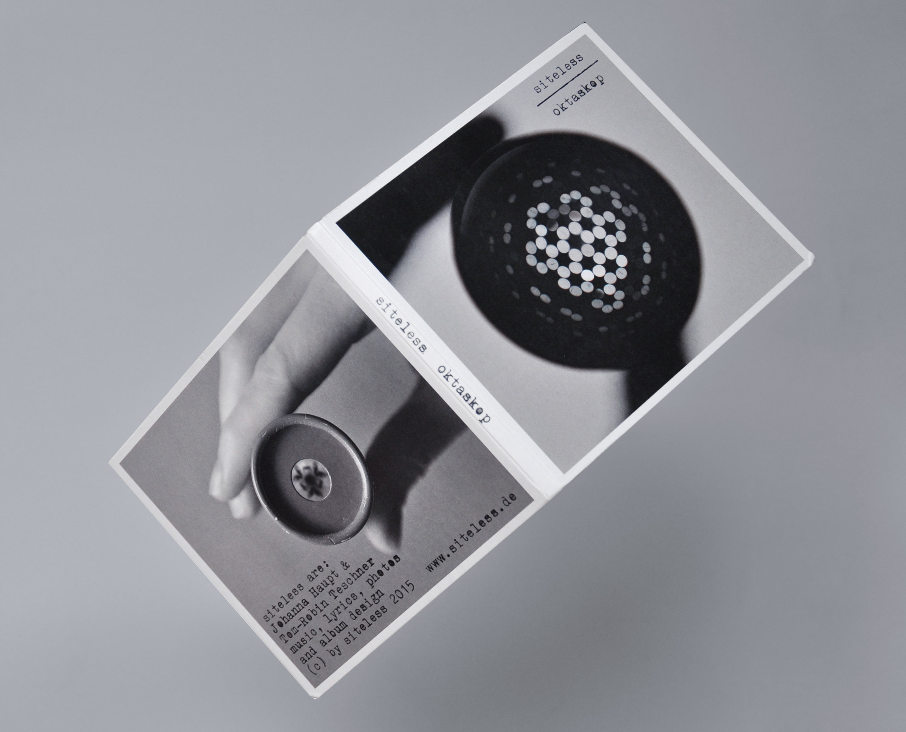
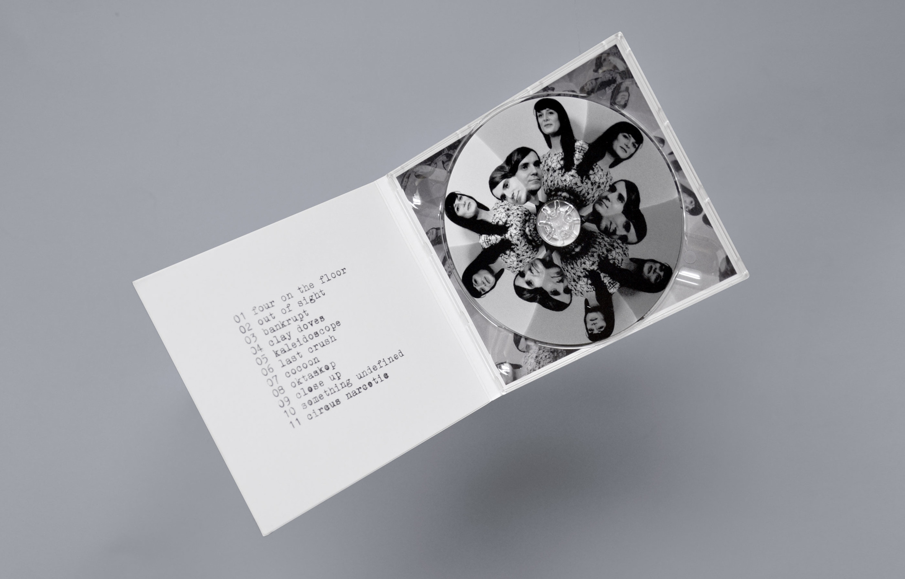
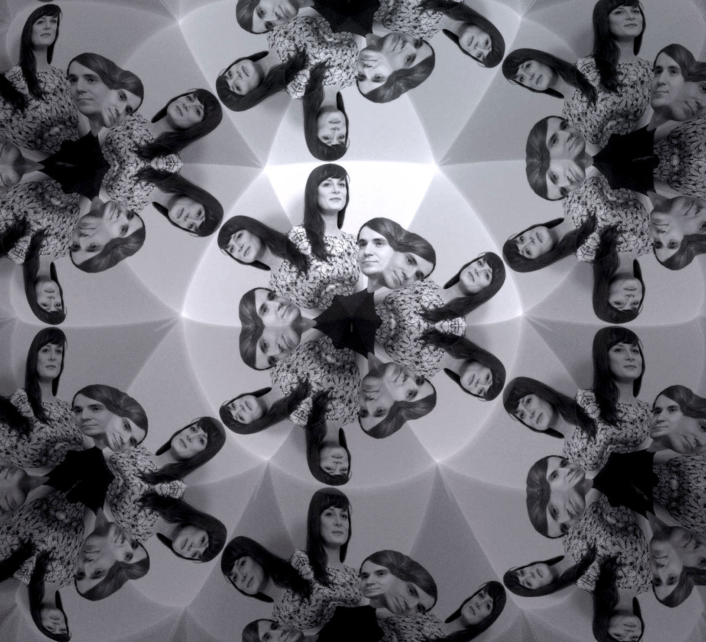
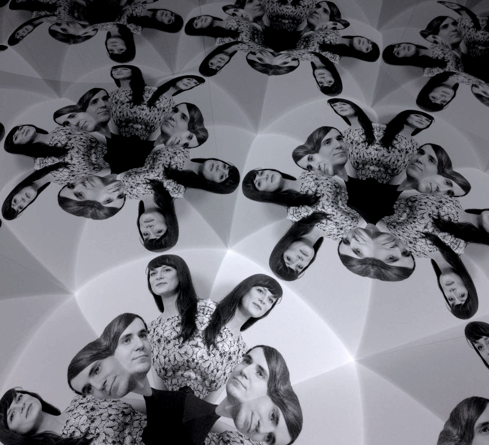

Siteless




Various designs for siteless' second album "oktaskop". The images on the cd and the inside are made of photographs in a computer generated teleidoscope. The text is written on a real typewriter.
Verschiedene Designs für siteless' zweites Album "Oktaskop". Die Bilder auf der CD und der Innenseite sind Fotos in einem computergenerierten Oktaskop. Der Text ist auf einer echten Schreibmaschine geschrieben.